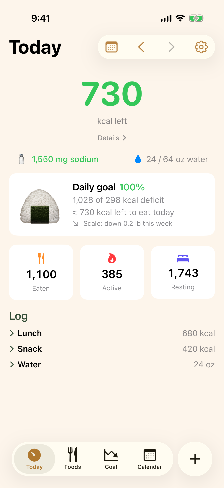
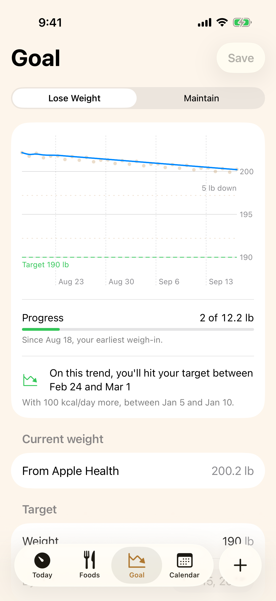
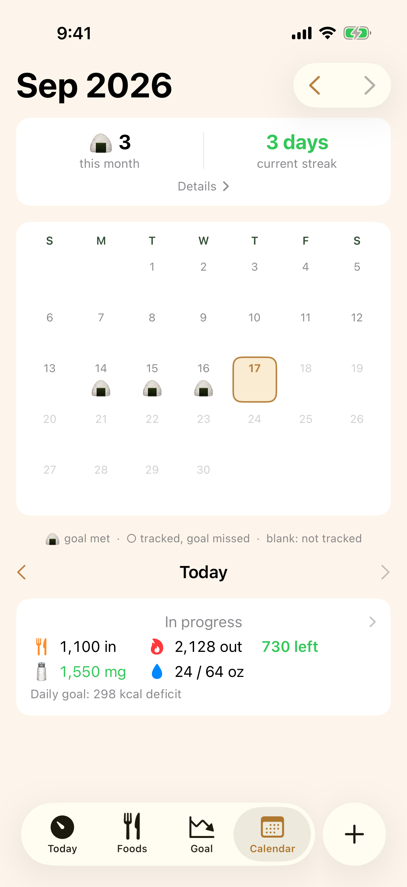
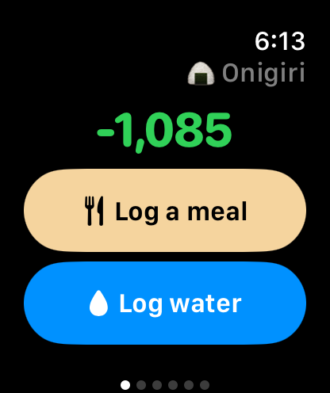
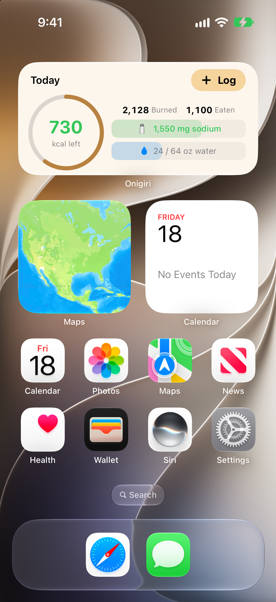
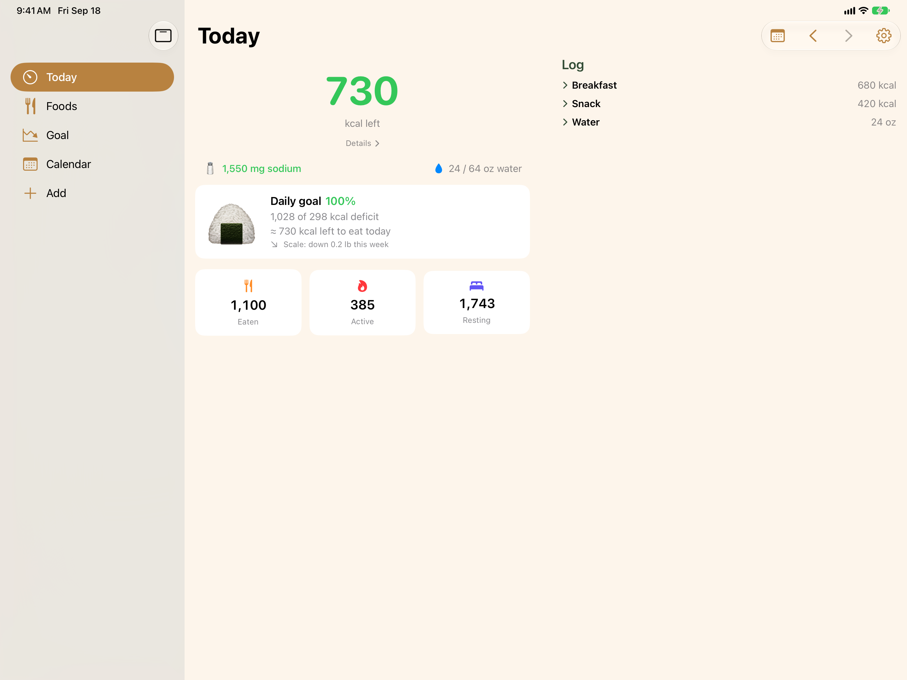

Onigiri tracks calories, nutrition, and water on iPhone, iPad, and Apple Watch — and saves every log straight to Apple Health. No account. No servers. No subscriptions. Nothing to lose if you ever move on.
Source-available · iOS 18 / watchOS 10+ · Built 100% agentically with Claude Code

Your logs live in Apple Health on your device, under Apple's protections. The only thing that ever leaves is the search text or barcode you look up against public food databases. Delete the app and your data is still yours in Apple Health.
What you ate minus what you burned — active and resting energy, straight from Apple Health — with the calories you have left for the day. Amber when you're close, orange when you're over.
Favorites first, recents next, and custom meals that log a whole plate at once. Search your library and two public food databases from one field.
Pick a weight and a date — Onigiri computes the daily deficit, turns it into a calorie budget, and projects your finish date from your real weigh-ins.

Days that hit their goal earn your badge — the month grid and streak counter make consistency visible. Judged by the goal you had that day, so moving the goalposts never rewrites history.

Log from the watch without touching your phone. Glance at widgets that refresh within seconds of any log — even one made on the other device.

The watch app stands alone — Favorites-then-Recent logging, crown-adjusted edits, complications for every face.

Today card, gauge, water, streak, and month-stats widgets — plus a Control Center water button.

Today uses the width — summary beside the log, sidebar navigation, every multitasking mode.
A target weight and date. Onigiri works out the daily calorie deficit needed to get there — burning more than you eat.
Budget = your average daily burn minus that deficit. The ring shows how much you can still eat today and stay on pace.
Finish at or under budget and the deficit is banked. Do it consistently and the trend line does the rest.
The whole app is on GitHub under the PolyForm Noncommercial license — free to build, run, and modify for any noncommercial purpose.